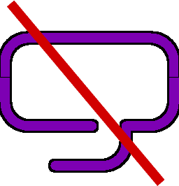

VersoTeX prepares dynamical HTML documents for reading in a web- browser. A source file looks like a usual source LaTeX file.
VersoTeX can be applied to a paper written in a plain LaTeX article style. If you write your papers in TeX, you can adjust any of them to VersoTeX. Although most of more sophisticated styles are not yet supported, virtually any LaTeX file after appropriate adjustments can be handled by VersoTeX. Indeed, the last 15 articles published in the Arnold Mathematical Journal have been transformed into a dynamical HTML format by VersoTeX, and most of articles published in the first two years in the Arnold Mathematical Journal were transformed by a similar package.
VersoTeX has a number of features. They are described below. The main purpose of them is to make reading and a careful study of text convenient. Dynamic HTML provides opportunities for this, which are not available for paper publishing or pdf.
When reading a mathematical text, we meet numerous references: to
literature, to formulas, definitions and statements of theorems from other parts
of the text, etc. Often the reader wants to see some of them simultaneously
with each other and the text which is currently read. On the other hand, at first
reading we prefer to move out of the sight some details, like proofs. VersoTeX
allows to do all of this.
The page is divided into three fields. The leftmost one is narrow, just
about 40 pixels wide, the middle one is of about 740 pixels. If the browser
window is narrow, then the fields overlap. On the top of the narrow field, there is an icon When you open an HTML document, the recto field is empty.
The lines below the abstract are titles of sections. A click on each of
them unrolls the section. If the section contains subsections, then each of the
subsections is still folded and is represented by its title. Clicking the title unfold
their content. Clicking the title of an open fold folds it down. This folding format is broadly used in programmer editors and in online
tables of content. It allows to keep out of sight parts of the text that are not of
interest at the moment. It takes time to unfold a text section by section. An inpatient reader
may open all the folds by at most two mouse clicks. Open the menu (this
requires a click if the menu was not open) and click the icon The next icon
closes all
the folds (including the abstract) at a single click. At the bottom of each open fold there is a thin (one pixel thick) blue
line. Under mouse it becomes thicker. When clicked, it folds down the fold
above it. So, if you have read a section (or a subsection) and want to close the
fold, you can use this line instead of clicking the title of the section after going
all the way up to it. In addition to sections, subsections and subsubsections, there are other
parts of the text which can be folded and which by default are folded when you
open the document. These are special sections, like
References, Acknowledgements, Keywords, Mathematics Subject Classification
, and, besides, folds of a different nature: proofs. Of course, proofs are very
important, but at the first reading we often do not want to go into details.
The title of a proof is blue and clickable. The click unfolds the proof.
At the end of an unfolded proof, we see a square ⬜ symbolizing the end of the proof. Clicking
the square closes the text of the proof.
Literature references are also blue and clickable. A click at a reference raises
a small window with the relevant bibliographical data. The next click at the
same reference deletes the window. The window is draggable. Draggability is handy, because when you
click several references that are close to each other on the page the windows
may overlap, and you have to separate them by dragging. A similar mechanism is implemented for footnotes. Thus a footnote
becomes a flying note and flies quite close to the place where you clicked to the
reference (so, you do not need to look at the bottom of the page or even at the
bottom of the next page).
A click on an item of the table of contents effects the verso: it brings
up the title of the corresponding part to the article. If the part was hidden in
a closed fold, then the click opens all the folds that hide this part. Besides sections, subsections and subsubsections, the table of contents
lists also all the theorems, lemmas, corollaries, figures, tables, etc.
On the verso, at the end of a title of a
section/subsection/subsubsection, there is an icon . A click on that
icon creates on the recto a window with a copy of the
section/subsection/subsubsection.
The icon Bib in the menu creates on the recto a window with a copy
of the whole bibliography. If you have got tired of these windows flying on recto or verso, you
may kill all of them by a single click on the icon  in the
menu. Killing of a single window can be done also by clicking a cross icon on
its upper right corner. The menu icon highlights all the pieces emphasized in the source tex file by the
command
\em
The VersoTeX relies on MathJax, an open source display engine for
mathematical formulas. MathJax can work from a distributed network service,
but, in order to use it in this way, one needs a web access. Also, one can
install MathJax in a local computer. See www.mathjax.org To a much lesser extent, VersoTeX uses jquery javascript library. They
also can work directly from the web, or can be downloaded to computer and
work locally. See jquery.com and jqueryui.com . In the setup provided here, we assume using content delivery networks.
In this version, displaying html files compiled by VersoTeX requires a web access.
Besides, the following files are required: They can be placed differently, but, in the configuration provided here,
they are placed in the same directory as the html file and, if one wants to have
them somewhere else, then a minor change of configuration would be needed.
Then it's a good place to introduce your customer commands for
mathematical formulas. Something like that: Contrary to the usual practice, these definitions must be surrounded
with the dollar signs. The command Then it's a right place to define your Theorem environments. The
amsthm.sty is not yet supported. Instead, the original LaTeX commands can
be used. Something like that: The environment proof is taken care of by VersoTeX, hence you do not
need to define them here. Abstract is a command rather than environment: The syntax for the commands VersoTeX is good for handling files that are not too long. I plan to
work out a book version of VersoTeX, in which this restriction will be lifted. If
a paper version of the file is about 50 pages or longer, then it's better to split it
prior to feeding to the present VersoTeX. This restriction comes from MathJax.
For a long files it takes too long to load MathJax. Answers to other TeX questions can be found in a few sample files of
articles by the author which you can find in this directory. Enjoy!
A TeX distribution usually contains a little program catdvi
. If this is not the case, install it separately: it is needed. The process of compilation is organized by macros written in the Vim
macro language. Let me remind that Vim is a programmer's text editor, a
clone of Vi. Vim is freely available for any operating system, see www.vim.org. Compiling a VersoTeX article requires an installed VIM editor and
two files: Vim shows red complain lines, when it fails to find a regular expression,
which had to be replaced. The user should not care about these warnings. At
the end of the process, we find Vim open with the resulting file article.html
open and this file saved in the directory, where article.tex was taken from.
As was mentioned above, a VersoTeX compilation of a TeX source
file, say article.tex, starts with opening article.tex in Vim and typing After this, the result is saved as article.html and stays open in Vim.
A number auxiliary files are left: M1-article.tex, M1-article.vim, T-article.tex,
T-article.toc, T-article.toc and T-article.log. They may be useful only for
debugging. Most of the job is done by TeX. The style file vo.sty redefines many
usual LaTeX commands, so that they force TeX to draw, instead of usual
typographical pages, an HTML file based on the same source file.
TeX and LaTeX are convenient for authors. Indeed, even if, when
writing an email, we need to include a mathematical formula, we use TeX codes,
although it is not assumed to be processed by TeX. Now many documents are prepared for reading online from a computer
screen. The screens become more readable. New generations of readers are used
to read from screen. Still, one can use typesetting by TeX/LaTeX, convert the output to
pdf format and use Adobe Acrobat or other pdf-viewer. Although the picture
that appears on a computer screen is almost identical to the picture printed on
paper, in some ways it is more convenient. It allows hyper-references and fast
search of words. However the pdf format does not allow to use many other new
opportunities of the new media. It lacks most interactive capabilities of a
simple web browser. The readers get used to appreciate advantages of interactive texts. It
seems that inevitably mathematics will find a way to publishing online dynamic
interactive texts. There are two major problems to be solved for this: For online dynamic publishing of scientific texts, the design principles
and specific tricks are still to be developed. Usually the traditions of paper
publishing are respected and followed, but enhanced occasionally with new
elements. For example, a table of contents is made easily available (either it is
permanently shown, or there is a button for displaying it) and the items of the
table work as hyper-references. I am not going to present a survey of works in this direction, but
restrict to a few references to those works which were the most inspiring for
me. I use and agree with some design solutions coined in these projects,
and disagree with others. Below I formulate a few of design principles which I
came to in my own project, VersoTeX.
Dynamic design.
The same mathematical text is read with different purposes (even by the same
reader). For example, when you see a text for the first time, you do not want
to see details of proofs, on the other hand, you want to have an easy access to
definition, major statements and the list of literature. A design should provide
an opportunity to remove elements of the text off your sight at your wish, and
emphasize other elements. This opportunity should be self-evident. A reader
should not be overloaded and confused by it.
Folding.
There is an old simple way of dynamical hiding parts of texts. It is
implemented long ago in some programmer's text editors as folding, see Wikipedia, Code
Folding It allows to hide the body of an element (e.g., a section, a
proof), which can be made visible by a click to its title. It makes sense to
arrange the initial state of document such that only the title, authors, abstract
and a list of section headings is seen.
The line lengths:
Justify text fully.
The text should be aligned along both margins. This is a good option as long
as lines are not too short.
Inner references.
All references to other elements of the text (bibliographic references, references
to formulas, footnotes, theorems, definitions, remarks, etc.) should be available
without scrolling of the main text and realized by floating windows. These
windows should be easy to open and close. They should not stay on your way.
Ideally, if the total width of the browser allows, they should be placed in a
separate area free of the main text.
The best solution for such a writer would be to write a text file in
an old good LaTeX, adding, when necessary, a few new commands for specific
elements of the text. In other words, it is desirable to have a LaTeX style
for preparing dynamic onscreen documents. The closer this style would be to
other commonly used styles for paper publication, the easier would be to move
between on-screen and on-paper publishing of the same document. A LaTeX source code contains almost all the information necessary for
creating dynamic HTML document fulfilling the design principles formulated
above. It is divided into sections, subsections, etc.; statements of theorems,
proofs, and definitions are distinguished; there is a built in system of internal
and external references, etc. Besides, it is easy to add new functionality via
adding new commands and environments. The tools available now require either learning the XML language or
use of converter programs like LaTeXML. A number of converters from LaTeX to dynamic html have been
written. The first of them, a PERL program LaTeX2HTML appeared in the
middle of nineties. Most of the existing LaTeX-HTML converters produce more or less
literal HTML copies of the paper. They are configurable, but changes are not
easy due to poor documentation. The most profound difficulty, which all
converters faced, is a huge amount of style packages providing modifications
and additions in TeX. The most convenient converter that I could find so far is LaTeXML. I
used it for making online version of the first two volumes of Arnold
Mathematical Journal. The necessary adjustments were made by Vim
macros applied first to the source TeX files and then to the resulting HTML
files. Differences in the author styles forced to make individual changes to
almost each article. VersoTeX is positioned as a style for LaTeX rather than a TeX-to-
HTML converter. It does not pursue the goal of automatic converting any
TeX file to a valid HTML file. As other TeX styles, it is not a priori compatible
with all other styles. Use the TeX itself as a parser and compiler is my original idea. It
came from experience. Like most mathematicians, I wrote mathematics in
TeX. I did this for about 30 years, and besides, in the beginning of this period,
I happened to write style TeX files for publishing of Russian journal Algebra and Analysis, and later I
wrote style files for a textbook
Elementary Topology: Problem Textbook
and its Russian version. This experience convinced me that TeX is an
adequate tool for drawing an HTML file as a picture based on a TeX file.
1. Instructions to a VersoTeX reader
1.1. Three fields.
When you open in a web browser window (which is wide enough) an
HTML document prepared as a TeX file with VersoTeX, you see a picture like
this:
 . Usually such an icon hides a
drop-down menu. Indeed, clicking the icon unrolls a menu. We will describe
its items later.
. Usually such an icon hides a
drop-down menu. Indeed, clicking the icon unrolls a menu. We will describe
its items later.
1.2. Verso.
The verso field looks like the beginning of a mathematical paper
(including its abstract) followed by a table of contents. In fact, this is not a
table of contents, but rather the whole article folded down. Its blue lines are
clickable. A click on the word "Abstract" folds down the text of abstract
leaving visible out of it only the word Abstract.
1.3. Recto.
At the opening of a document, the rightmost field of the browser page,
the recto
is empty. It's your choice, what to bring there. After a while, it may look like
this.
1.3.1. Table of
Contents.
A click on the bottom icon ToC in the menu brings up a Table of
Contents window at the right upper corner of the recto. The table of contents
is folded and can be unfolded either gradually by clicking on triangles next to each
item, or by a single click on the icon on the right side of the table of contents
window.
1.3.2. From verso to
recto.
On verso, there are elements colored with dark violet. These are the
numbers in references to sections, theorems, lemmas, and references to
mathematical formulas. Clicking at any violet element creates on the recto a
window with the copy of the corresponding part of the text. Those windows
are draggable and resizable. A repeated click on the same violet element of the
verso closes the window on the recto.
1.4. Menu.
You can open a copy of the whole document on the recto, by clicking
the icon in the menu. This gives
a useful opportunity to reed side by side different parts of the document.
1.5. The environment for
reading VersoTeX html article.
Of course, a modern web-browser is needed. This may be Firefox or
any other clone of Mozilla, Chrome, Safari, Opera, Microsoft Edge, or even
Internet Explorer.
2. Instructions to a VersoTeX runner
2.1. Adjust the source
file.
For the best result, the document class of the paper should be article.
So the source file should start with
\documentclass{article}
Right after that you may put
\usepackage{verbatim,amssymb,amsmath,array}
\usepackage{vo}
\pagestyle{empty}
\begin{document}
\hide{\$ \newcommand{\Q}{\mathbb Q}\$}
\hide{\$ \newcommand\p{\partial}\$}
\hide{}
is not necessary, but recommended. If you do not put it, the
definitions will be seen while the MathJax will be loading.
\spnewtheorem{Th}{Theorem}[section]{\bf}{\it}
\renewcommand{\theTh}{\thesection.\Alph{Th}}
\spnewtheorem{rem}[Th]{Remark}{\bf}{\rm}
\abstract{The text of the abstract.}
\title, \author, \date, \maketitle, \section, \subsection, \subsubsection,
\label, \ref, \cite, \footnote
is usual. Inside math formulas everything is usual, or, to be more
precise, as MathJax requires.
2.2. The environment needed
for running VersoTeX.
First of all, the TeX should be installed and working. Any major TeX
distribution, like TeX Live, Mac TeX or MikTex, should work.
2.3. Running
VersoTeX.
Compilation of a LaTeX source file is performed as follows. The source
file, say article.tex, is open in Vim. Then, the macros from vo.vim are to be
run in Vim. You just need to type in the command mode
:source
vo.vim
Here we assume that vo.vim is located in the same directory as
the source TeX file. Then vo.vim organizes the whole compilation. We
consider the process of compilation in the next section. In a regular situation,
the process of compilation does not require any user's action, except for
pressing bar, when Vim says "more", and enter, when Vim requires.
3. Under the hood
:source vo.vim. The macros collected in vo.vim then do the following:
4. Speculations on problems and solutions
4.1. Two problems to be
addressed.
TeX/LaTeX is a lingua franca of the scientific world. Most of
mathematicians and physicists write their research papers and textbooks (and
even private letters) in TeX/LaTeX. Most papers on ArXiv are prepared in
TeX. (Lack of a TeX source for a paper in ArXiv is a strong indication that
the author is not a professional.)
4.2. Design.
Hundreds of years of publishing worked out standards of a design for
scientific papers. Just to make clear what I mean, let me mention a few
elements of the design. Normally a paper has to be sectioned, although the
number of levels in the sectioning may vary. Sections are equipped with titles.
The list of bibliography is placed at the end of a paper. The words defined in
a definition is emphasized (e.g, by italic). Statements of theorems are also
distinguished with a font, equipped with titles and numbered. And so on...
Keep lines sufficiently short
, so that it would not be difficult, after coming to the end of a line, to find the
beginning of the next line. On the other hand,
keep lines sufficiently long
so that they accommodate mathematical formulas, which tend be long in some
texts.
4.3. LaTeX for HTML.
The tools for preparation of dynamic online documents are not
writer-friendly. The very notion of a writer-friendly tool is to be specified.
Here I mean a writer who knows LaTeX and has an experience in writing
source LaTeX files. Journal publications require this anyway.